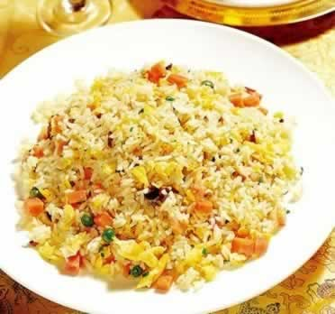
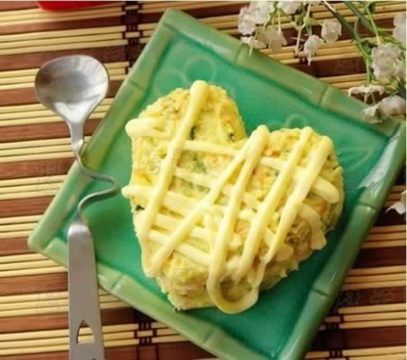
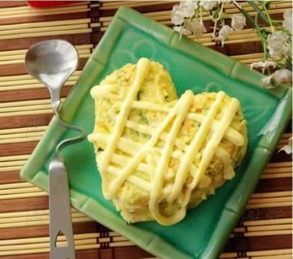

小小鸡蛋 “煮”着吃最营养
鸡蛋是妈妈孕期当中不可缺少的食物，它含有的卵黄素、卵磷脂、胆碱，对胎儿的神经系统和身体发育十分有利，还能给准妈妈益智健脑及促进肝细胞再生。鸡蛋中还含有维生素、铁、钙、钾等人体所需的矿物质，可分解和氧化人体的致癌物质，具有防癌作用。
有的准妈妈说生吃鸡蛋更有营养，这是不科学的。生吃鸡蛋不仅不卫生，容易引起细菌感染。另外，生鸡蛋内含有的“抗胰蛋白酶”还会破坏人体的消化功能。至于那些经过孵化、但还没有孵出小鸡的“毛鸡蛋”，就更不卫生了。
鸡蛋的吃法多种多样，其中煮鸡蛋是最佳的吃法，因为就营养的吸收和消化来讲，煮蛋可达到接近100%，但要注意细嚼慢咽。此外，茶叶蛋一定要少吃，因为茶叶中含酸化物质，与鸡蛋中的铁元素结合，对胃起刺激作用，影响胃肠的消化功能。还有鸡蛋是高蛋白食品，准妈妈最好不要食用过多，因为会增加肾脏的负担，每天最多两个鸡蛋就够了。在烹饪鸡蛋的过程中，有如下3点注意事项：
1、鸡蛋与白糖不宜同煮：很多地方有吃糖水荷包蛋的习惯。其实，鸡蛋和白糖同煮，会使鸡蛋蛋白质中的氨基酸形成果糖基赖氨酸结合物。这种物质不易被人体吸收，对健康会产生不良作用。
2、鸡蛋与豆浆不宜同食：早上喝豆浆的时候吃个鸡蛋，或是把鸡蛋打在豆浆里煮是许多人的饮食习惯。豆浆性味甘平，有很多营养成分，单独饮用有很强的滋补作用。但其中有一种特殊物质叫胰蛋白酶，与蛋清中的卵松蛋白相结合，会造成营养成分损失，降低二者的营养价值。
3、鸡蛋与兔肉不宜同吃：鸡蛋还不能与兔肉同吃。鸡蛋同兔肉同食会刺激肠胃道，引起腹泻。
本周推荐尝试食谱1：
扬州炒饭
推荐理由：扬州炒饭制作简单又营养丰富，有健脑益智、保护肝脏的作用。
食谱原料：
鸡蛋1枚，青豆、胡萝卜、火腿、香肠、米饭、蒜籽、葱、色拉油、盐各适量。
制作方法：
1、首先将胡萝卜、火腿洗净切成小丁块状，越小越好，但是不能切成末状。再将辅料洗净切成末状，将鸡蛋搅碎放入少许葱末在内。
2、将锅内放上少许色拉油烧至8成热。将切好的主料，同时也放入切好的蒜末,，放入锅里炒拌，炒到可以闻到香味时(此过程只需几秒钟)再将鸡蛋放入锅内炒拌，（这时需加大火候，这样鸡蛋会很松软,也不易炒糊）。当鸡蛋炒至金黄色时，将其装盘。
3、再放入少许色拉油加热至八成，将米饭放入锅内翻炒。此时，需将饭中加放少许食盐。当米饭炒到在锅里可以蹦起饭粒时，再将刚才炒好的主料及辅料全部返锅炒拌，直到饭粒松软不粘为起锅最佳时间。
本周推荐尝试食谱2：
缤纷土豆泥沙拉

缤纷土豆泥沙拉

推荐理由：土豆含丰富的维生素B1、B2、B6和泛酸等B群维生素，美味的土豆泥可以增强食欲。
食谱原料：
土豆 1个，黄瓜1根，胡萝卜1根，鸡蛋 1个，沙拉酱、五香粉、食盐、麻油、橄榄油适量。
制作方法：
1、所有原料准备。
2、将土豆去皮，切片，上蒸锅蒸熟烂（蒸土豆的时候可以将鸡蛋一并放入煮熟）。
3、蒸烂的土豆，放入保鲜袋，用擀面杖擀成泥（或者放在容器中捣成泥）。
4、压好的土豆泥放在干净的碗里，加入煮好鸡蛋的蛋黄，搅拌均匀。
5、胡萝卜去皮切片放在滚水里焯煮一下。
6、胡萝卜切碎丁，加入到土豆泥中。
7、煮鸡蛋的蛋白切碎，加入到土豆泥中。
8、继续切碎黄瓜，土豆泥搅拌均匀。
9、根据自己喜好，放进调料粉，食盐，麻油。
10、放入大概30g左右的沙拉酱，完全拌均匀。
11、准备干净的容器，内壁刷一层橄榄油。
12、将土豆泥沙拉装进去，压实。
13、倒扣在盘中，即可食用，表层亦可淋一层沙拉酱装饰表层，再淋点色拉酱，口感能浓郁。